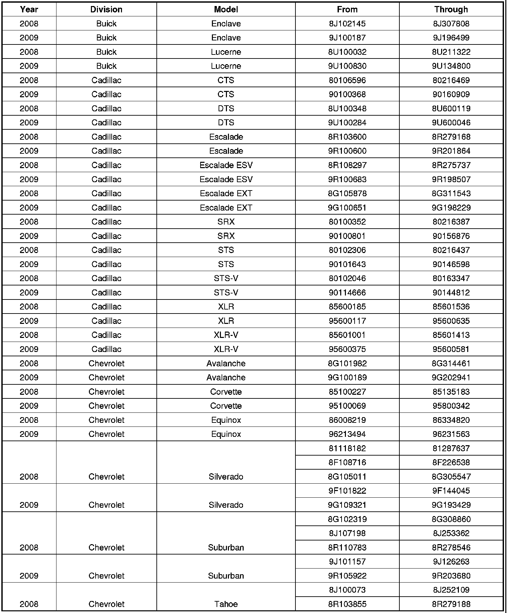
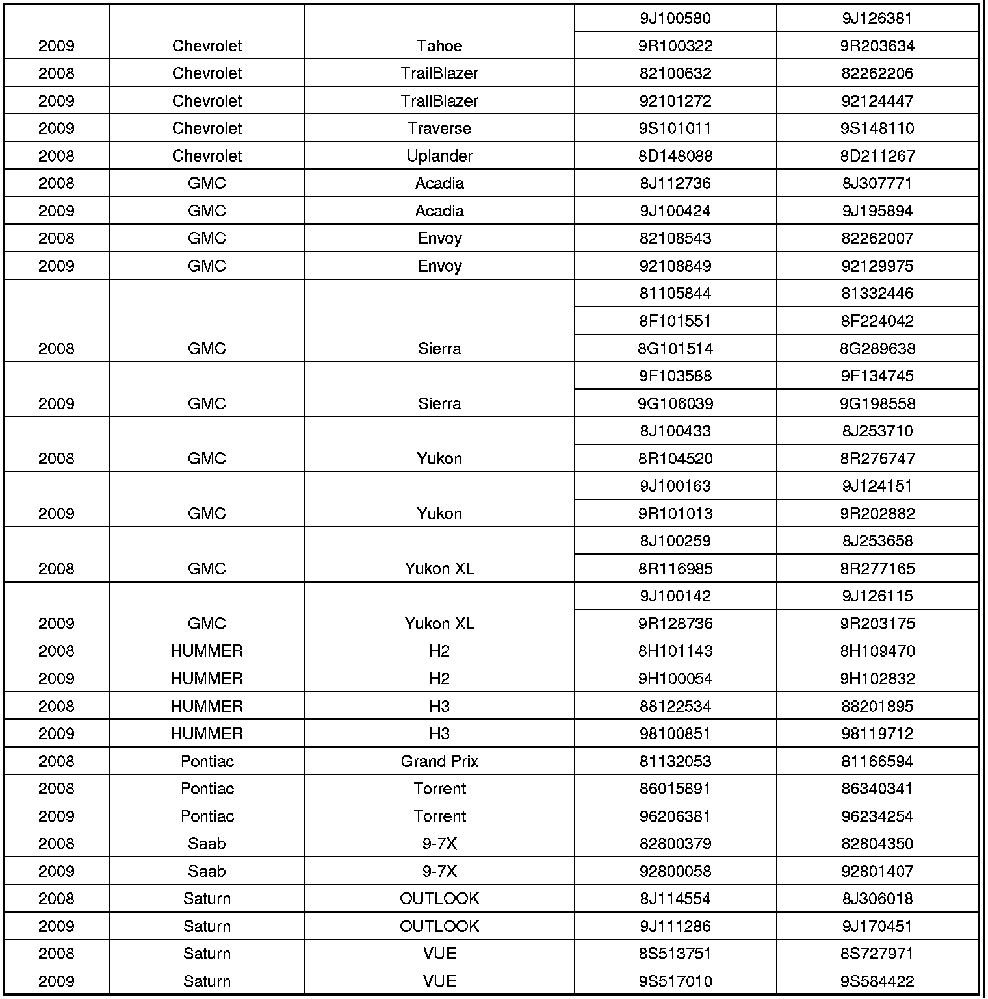
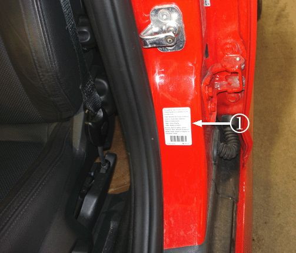
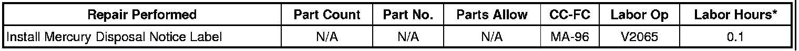
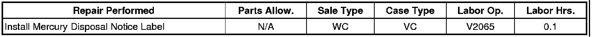
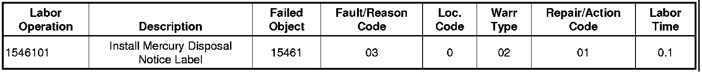

Campaign - Missing Mercury Disposal Notice Label: Overview
CUSTOMER SATISFACTIONBulletin No.: 08386
Date: April 28, 2009
Subject: 08386 - Missing Mercury Disposal Notice Label
Models:
2008-2009 Buick Enclave, Lucerne
2008-2009 Cadillac CTS, DTS, Escalade, Escalade ESV, Escalade EXT, SRX, STS, STS-V, XLR, XLR-V
2008 Chevrolet Uplander
2008-2009 Chevrolet Avalanche, Corvette, Equinox, Silverado, Suburban, Tahoe, TrailBlazer 2009 Chevrolet Traverse
2008-2009 GMC Acadia, Envoy, Sierra, Yukon, Yukon XL
2008-2009 HUMMER H2, H3
2008 Pontiac Grand Prix
2008-2009 Pontiac Torrent
2008-2009 Saab 9-7X
2008-2009 Saturn OUTLOOK, VUE
Registered in Connecticut, Louisiana, Maine, Maryland, Massachusetts, Minnesota, New York, Rhode Island, Vermont
**********THIS PROGRAM IS IN EFFECT UNTIL AUGUST 15, 2009.**********
Condition
Certain 2008 model year Chevrolet Uplander and Pontiac Grand Prix, 2008-2009 model year Buick Enclave, Lucerne; Cadillac CTS, DTS, Escalade, Escalade ESV, Escalade EXT, SRX, STS, STS-V, XLR, XLR-V; Chevrolet Avalanche, Corvette, Equinox, Silverado, Suburban, Tahoe, TrailBlazer; GMC Acadia, Envoy, Sierra, Yukon, Yukon XL; HUMMER H2, H3; Pontiac Torrent; Saab 9-7X, Saturn OUTLOOK, VUE; and 2009 model year Chevrolet Traverse vehicles, registered in Connecticut, Louisiana, Maine, Maryland, Massachusetts, Minnesota, New York, Rhode Island, and Vermont, may have a condition in which the Mercury Disposal Notice Label was not included on the vehicle. This label contains instructions for the proper disposal of mercury-containing components that are installed on the vehicle.
Correction
Dealers/retailers are to inspect and, if necessary, install a Mercury Disposal Notice Label on the driver's side door post (B pillar). Since this label can easily be installed by the customer, and to reduce their inconvenience, the label and installation instructions will be mailed to customers of record. This program will expire August 15, 2009.
Vehicles Involved
Involved are certain 2008 model year Chevrolet Uplander and Pontiac Grand Prix, 2008-2009 model year Buick Enclave, Lucerne; Cadillac CTS, DTS, Escalade, Escalade ESV, Escalade EXT, SRX, STS, STS-V, XLR, XLR-V; Chevrolet Avalanche, Corvette, Equinox, Silverado, Suburban, Tahoe, TrailBlazer; GMC Acadia, Envoy, Sierra, Yukon, Yukon XL; HUMMER H2, H3; Pontiac Torrent; Saab 9-7X, Saturn OUTLOOK, VUE; and 2009 model year Chevrolet Traverse vehicles, registered in Connecticut, Louisiana, Maine, Maryland, Massachusetts, Minnesota, New York, Rhode Island, and Vermont, and built within these VIN breakpoints:


Important
Dealers/retailers are to confirm vehicle eligibility prior to beginning repairs by using the system(s) below. Not all vehicles within the above breakpoints may be involved. - GM dealers should use GMVIS. - Saturn US retailers should use the 'Investigate Vehicle History' link on the Global Warranty Management application within DealerWorld. - Saab US dealers should use IRIS On-Line Recall/Campaign Inquiry.
For dealers/retailers with involved vehicles, a listing with involved vehicles containing the complete vehicle identification number, customer name, and address information has been prepared and will be provided through the GM GlobalConnect Recall Reports. Dealers/retailers will not have a report available if they have no involved vehicles currently assigned.
The listing may contain customer names and addresses obtained from Motor Vehicle Registration Records. The use of such motor vehicle registration data for any purpose other than follow-up necessary to complete this program is a violation of law in several states/provinces/countries. Accordingly, you are urged to limit the use of this report to the follow-up necessary to complete this program.
Parts Information
Dealers/retailers will be shipped Mercury Disposal Notice Labels for inventory vehicles at no charge.
Labels will be included in the DWD box shipped the week of April 27, 2009; however, you may not receive your DWD box until May 6, 2009. Please do not contact Archer or the GM Customer Assistance Center until after May 6, 2009 if you are concerned that you did not receive your DWD box or its contents.
Service Procedure
1. Open the driver's door.

2. Locate the area where the label is to be affixed (1).
- If there is a Mercury Disposal Notice Label affixed to the pillar, no further action is required.
- If there is NO Mercury Disposal Notice Label affixed to the pillar, proceed to Step 3 and install the label.
3. Ensure that the area is clean and dry. Use a non-oil based cleaner, preferably isopropyl alcohol.
4. Remove the backing from the new label.
5. Apply the label and smooth the label from the center out.
6. Close the driver's door.
Claim Information - GM Only
Submit a Product Claim with the information indicated below:

Refer to the General Motors WINS Claims Processing Manual for details on Product Recall Claim Submission.
Claim Information - Saturn Only
1. To receive credit, submit a claim with the information below:

Claim Information - Saab Only
1. To receive credit, submit a claim with the information below:

Customer Notification
General Motors will notify customers of this program on their vehicle (see copy of customer letter shown in this bulletin).
Dealer Program Responsibility
All unsold new vehicles in dealers' possession and subject to this program must be held and inspected/repaired per the service procedure of this program bulletin before customers take possession of these vehicles.
Dealers are to service all vehicles subject to this program at no charge to customers, regardless of mileage, age of vehicle, or ownership, through August 15, 2009.
Customers who have recently purchased vehicles sold from your vehicle inventory, and for which there is no customer information indicated on the dealer listing, are to be contacted by the dealer. Arrangements are to be made to make the required correction according to the instructions contained in this bulletin. A copy of the customer letter is provided in this bulletin for your use in contacting customers. Program follow-up cards should not be used for this purpose, since the customer may not as yet have received the notification letter.
In summary, whenever a vehicle subject to this program enters your vehicle inventory, or is in your dealership for service through August 15, 2009, you must take the steps necessary to be sure the program correction has been made before selling or releasing the vehicle.

Disclaimer